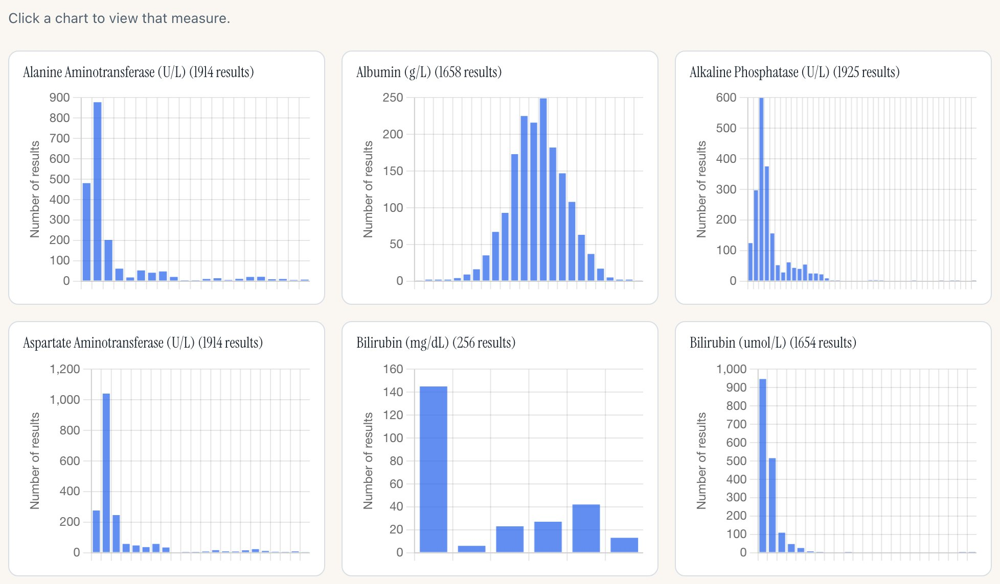
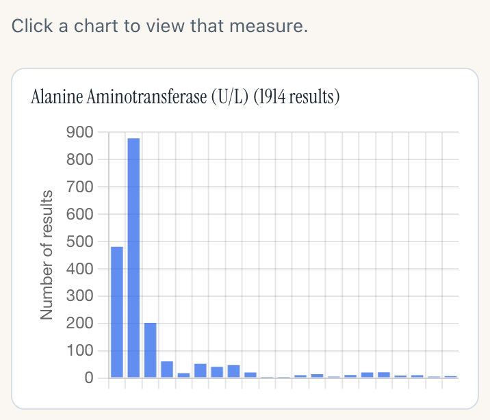
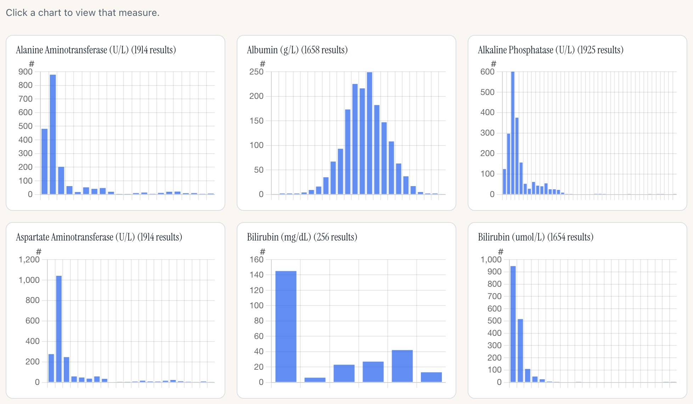
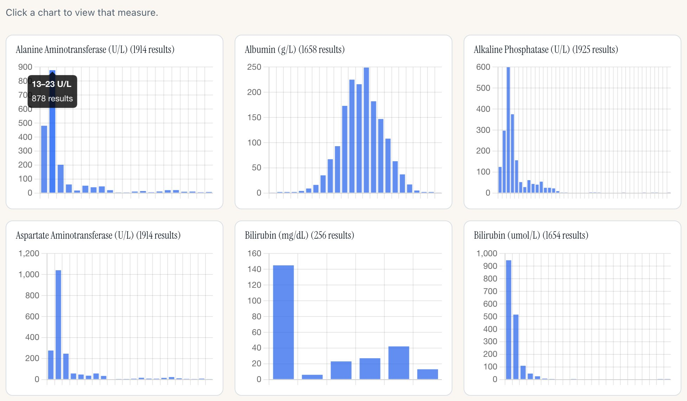
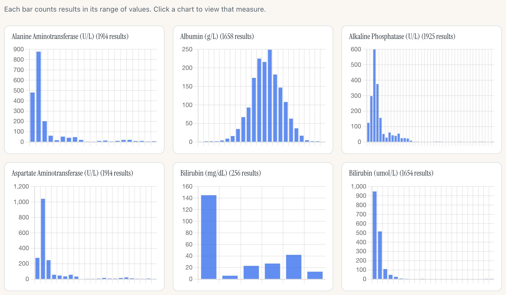
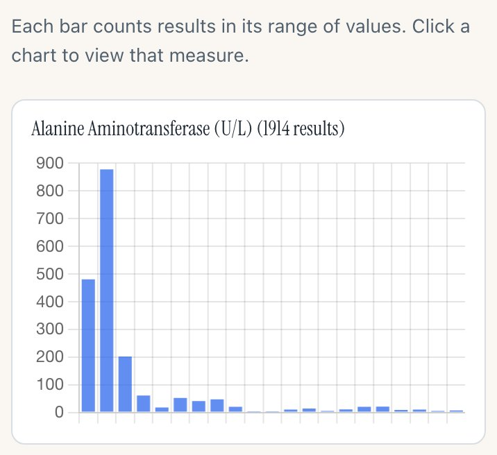
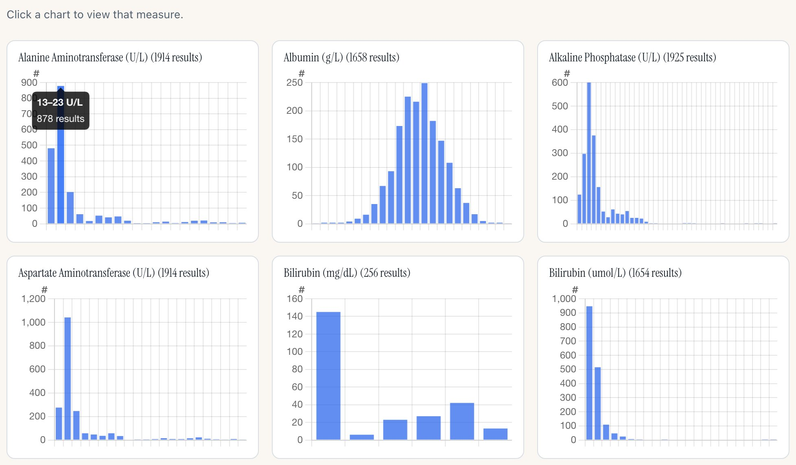
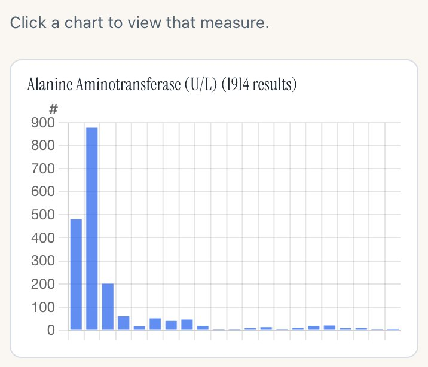

safety.viz Safety Histogram 8 November 2026 options decided
What the overview’s count axis should say
You don’t like “Number of results” turned on its side beside every panel of the all-measures overview. Here are five options, each drawn on the live dev overview, with the one I recommend open first.
Release candidate: safety.viz v1.11.3-RC1Before and after: the v1.11.3 demo pageLive: the dev overview
Decided, 8 November 2026
@jwildfire: “One line + Hover. No #.” And for the grouped panels: “Yes, same”.
So the overview’s panels carry no count title and no “#”; the line above them says what the bars count (option D’s line), and pointing at a bar gives its range and count (option C’s hover). The grouped panels drop their title and take the same hover; the grouped view has no line of its own, so the titled chart above them is the context. Built in the count on hover (safety.viz #359), pull request #360, for release 1.11.3. The options below are kept as they were put to him.
Recommendation
Option E: a small “#” at the top of every panel’s count axis, and a bar’s range and count when you point at it. Every panel still says it shows counts, on a phone too, and the bars get their width back. The single-measure chart keeps its two full titles either way.
Your two calls
- Which option. Recommended: E.
- Whether the grouped panels follow. They share the overview’s axis code and already show a count on hover. Recommended: yes, the same “#”, so the small multiples read alike.
Option A
Today: the title beside every panel
“Number of results”, turned on its side, beside the count axis of every panel. This is release candidate 1, as it stands.
Desktop, 1280px wide · the first two rows

1- The axis title, repeated on all 29 panels of the overview and on every grouped panel.
Phone, 390px wide · the first panel

1- On a phone the title takes about a tenth of the panel’s width.
For it
- The axis is named the same way as on the single-measure chart.
- Nothing to learn: the title says what the bars count.
Against it
- The same words 29 times in a view that is for scanning shapes.
- Each panel loses width to the title, so the bars are narrower.
Option B
A “#” at the top of the count axis
No title beside the axis. A small “#” sits above the top tick on every panel, where the unit of an axis often goes.
Desktop, 1280px wide · the first two rows

1- The “#” over the tick column. Pointing at it says “Number of results in each bar”.
Phone, 390px wide · the first panel
 1
1- The same “#” on a phone. The bars get their width back.
For it
- Still says “these are counts” on every panel, phone included.
- Takes no width: the bars are as wide as in release 1.11.2.
Against it
- “#” is shorthand. A reader meets the full words only in the hint line, the panel title’s “(1914 results)” and the single-measure chart.
Option C
Nothing on the axis; the count on hover
No title and no mark. Pointing at a bar shows its range of values and how many results fall in it.
Desktop, 1280px wide · the first two rows

1- Hovering a bar: “13–23 U/L”, then “878 results”. Today the overview shows no tooltip at all.
Phone, 390px wide · the first panel
On a phone there is no hover: a tap opens the measure. The phone shows a bare count axis with nothing to say what it counts.
For it
- The cleanest panels of the five.
- Exact counts and the bar’s range, which no option gives today.
Against it
- Nothing at all on a phone or in a screenshot.
- The panels are buttons that open the measure, so the hover has to share the panel with the click.
Option D
One line above the grid
No title on the panels. The hint line above the grid, which today says only how to open a measure, also says what the bars count.
Desktop, 1280px wide · the first two rows

1- “Each bar counts results in its range of values. Click a chart to view that measure.”
Phone, 390px wide · the first panel

1- The same line on a phone, above the first panel.
For it
- Said once, in words, for the whole grid.
- Panels as clean as option C.
Against it
- Easy to read past, and it scrolls away: from the third row down nothing on screen says what the axis is.
- A panel copied or captured on its own carries no label.
Option E · recommended
Recommended: the “#” and the count on hover
Option B and option C together: the “#” on every panel, and a bar’s range and count when you point at it.
Desktop, 1280px wide · the first two rows

12- The “#” over the tick column, on every panel.
- Hovering a bar shows its range and its count.
Phone, 390px wide · the first panel

1- On a phone the “#” is what remains. A tap still opens the measure.
For it
- Every panel says it shows counts, on a phone too, at almost no cost in width.
- The exact count is one point away on a desktop.
Against it
- The most work of the five, though still small: a few lines for the mark and a tooltip, with their tests.
Side by side
| A · Today | B · # | C · Hover | D · One line | E · # and hover | |
|---|---|---|---|---|---|
| Says “counts” on every panel | Yes, in words | Yes, as “#” | No | No, once above | Yes, as “#” |
| On a phone | Yes | Yes | Nothing | The line | The “#” |
| Exact count of a bar | No | No | On hover | No | On hover |
| Width the bars lose | About 16px a panel | None | None | None | None |
| Work | Done | Small | Small | Smallest | Small |
What any change does to the release
- It is display only. No count, bar or range changes.
- It lands on dev as one more small pull request, with its tests, the requirement rows for the overview’s axis (SH-AXIS-006) reworded, and the screenshot baselines refreshed. That refresh needs one more pair of runs approved by you.
- The release candidate then becomes RC2 on the same pull request, with the demo page’s overview stills retaken. The working group’s email waits for the release either way.
How these were made
Each still is the live dev overview (safety.viz dev, the v1.11.3 release candidate) in headless Chromium, with the running charts changed in the page to show the option: nothing here is built into safety.viz yet. Option A is the page as it is. The hover in options C and E is set on the tallest bar of the first panel. The tooltip in the build would round its range with the same digits as the chart’s ticks. capture.cjs takes the stills; build.cjs writes this page.